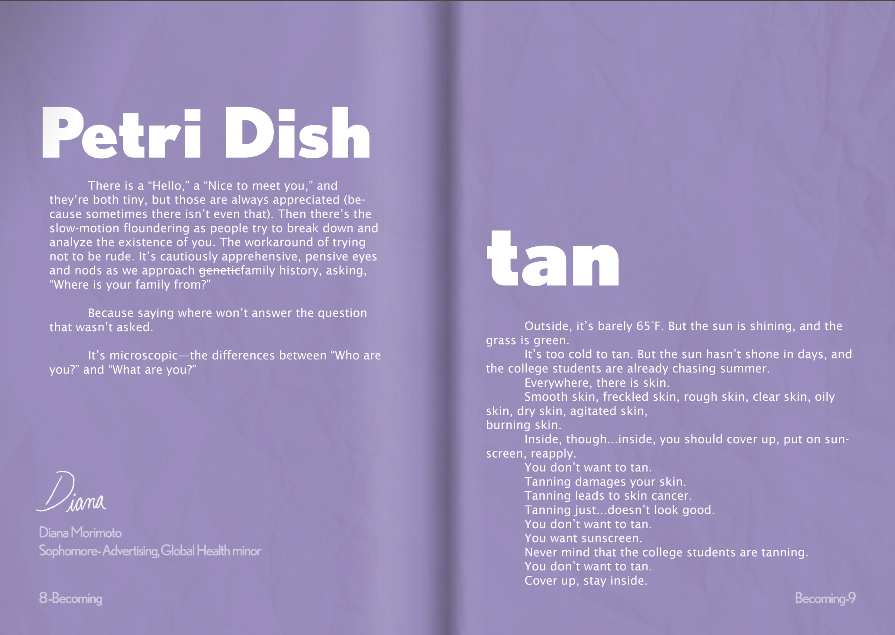
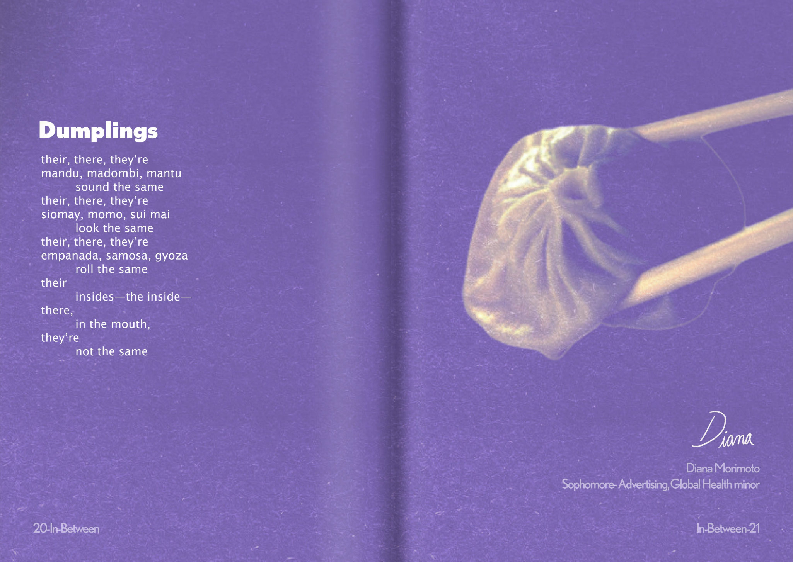

Mock Pinterest Campaign


I coded the website you are currently viewing using HTML, CSS, and Javascript. I am always working on updating my portfolio, especially the Boba page (so parts of it might be missing some text).
This year, I directed a zine featuring original manual and digital artwork and written works from student members of Taking Up Space.


Google Doc of essay
Download PDF of essay
Thanks to a nomination from my professor, I was awarded the Stephen Swig Essay Prize from the University of Oregon for this essay.
In this essay, I examine the intersection between race, sexuality, and disability in healthcare.
Using Vivian Chong’s graphic memoir Dancing After TEN as a case study, I examined the intersection of race, gender, and impairments in Western medical systems and how certain bodies have been systematically neglected, objectified, and abused.
Chong's identity as Asian, a woman, and an impaired person changes how the healthcare system interacts with her and people with similar identities, particularly as mental health takes begun to take to the forefront of how we understand "health."
The goal of this assignment was to comment on a personal or historical past through reshaping or altering the image. "Remaking" the past is about reclaiming history.

This is my remaking of the legacy of Hiroshima. "Hiroshima" invokes images of half-devoured buildings, trees stripped nake, and various stages of mutilation. We associate Hiroshima with "atomic bomb," "Nagasaki," "destruction," "devestation," "nuclear," "war," and "WW2." We say “Hiroshima” with reverence, and when we read and hear “Hiroshima,” our minds follow it with a short silence, as if the word itself demands the same silence that followed “Little Boy.” We think of the deaths: the death toll, the death count, the number of deaths. We turn people into numbers and define them by their death, taking from them their lives as much as the physical attack did.
My intention in remaking Bernard Hoffman’s photographs of the ruins of Hiroshima was to remind the audience that the people of Hiroshima should be defined by their lives, not their deaths. My artwork is loosely based on my grandfather’s experience leaving Hiroshima for the U.S. in the aftermath of the attack. From the image, the first and most obvious interpretation is that a child is talking about how their father bought tickets “home” to Hiroshima, where rainbows, fruit, and milk were abundant before the bombing. It emphasizes the lives, rather than the deaths, associated with “Hiroshima.” The second interpretation of the image is less obvious, but one that I am more attached to. It illustrates a child leaving Hiroshima in the aftermath of destruction and dreaming of a land where there are rainbows, fruit, and milk. However, the child can only imagine their new destination based on the decimation of their former residence.